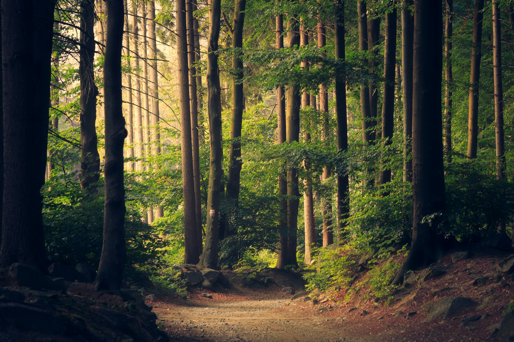

Понятные инструкции
Краткие первые шаги, запреты и пояснения без сложных формулировок.
ЭкоНавигатор — школьный проект о понятных действиях в экологических ситуациях. Для жителей Липецкой области, которым важно быстро разобраться, что делать.
Экология, информатика и обществознание встречаются здесь в одном практическом инструменте: от бытовой ситуации до обращения в подходящую организацию.
Посмотреть инструкции
Когда сведения разбросаны по разным ресурсам, сложно понять, с чего начать.
Краткие первые шаги, запреты и пояснения без сложных формулировок.
Контакты организаций, работающих с вопросами жителей Липецкой области.
Предупреждение о 112 доступно сразу. При угрозе жизни помощь важнее заполнения форм.
В инструкциях даны ссылки на материалы МЧС, Роспотребнадзора, Росприроднадзора и Российского экологического оператора. Учебные памятки не заменяют помощь специалиста. Отдельные рекомендации и контакты могут меняться: перед обращением проверяйте официальный ресурс.